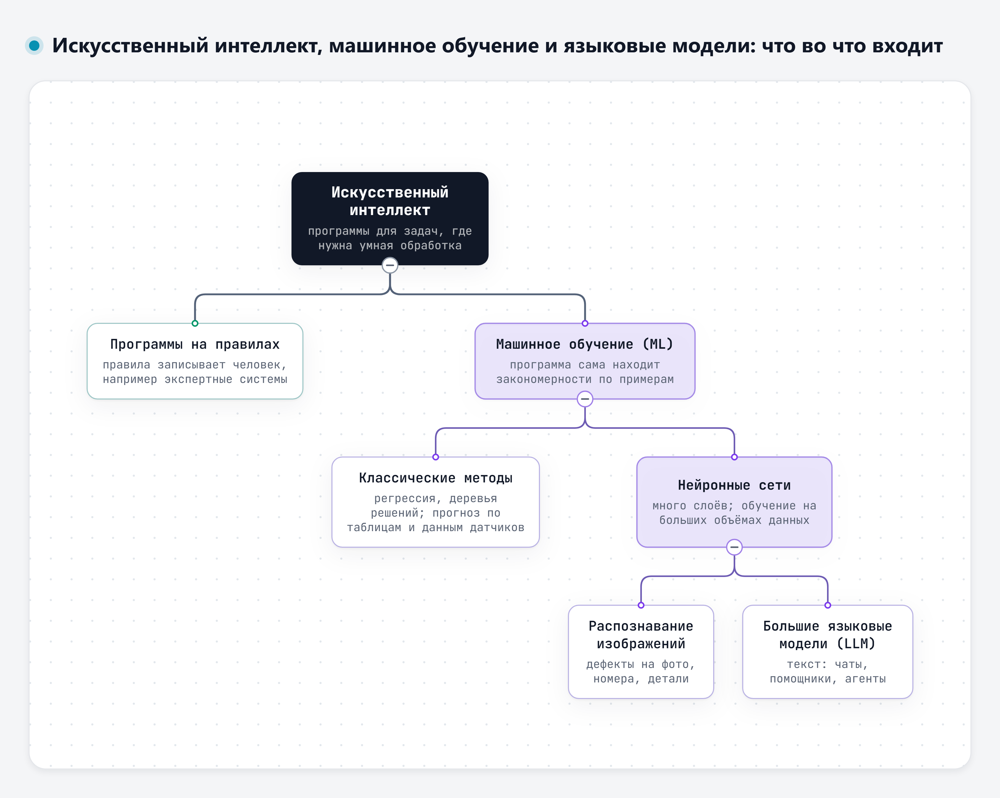

1 Что такое машинное обучение (ML) и что такое большая языковая модель (LLM)? Это одно и то же?
Коротко
Нет, но одно входит в другое. Машинное обучение – подход, при котором программа не получает правила от человека, а сама подбирает их по примерам. Большая языковая модель – один из результатов такого подхода: огромная нейронная сеть, обученная на текстах. Любая языковая модель – это машинное обучение, но не всякое машинное обучение – языковая модель.
В России термины ИИ закреплены в национальном стандарте ГОСТ Р 71476-2024, он действует с 1 января 2025 года [1]. Машинное обучение там определено как «процесс оптимизации параметров модели с помощью вычислительных методов таким образом, чтобы поведение модели отражало данные и/или опыт» [1]. Проще: модель подстраивают под примеры, пока она не начнёт давать нужный результат.
Нейронная сеть по тому же стандарту – сеть из слоёв нейронов, соединённых связями с регулируемыми весами [1]. Большая языковая модель – нейронная сеть с миллиардами параметров, обученная на огромном объёме текстов предсказывать продолжение текста. Отдельного термина «большая языковая модель» в стандарте нет [1].

Посмотреть, как маленькая нейронная сеть учится распознавать цифры, можно в браузере, в лаборатории «Цифра. Слой за слоем»: https://neural-network-digit-recognition.pikov.expert/ [2].